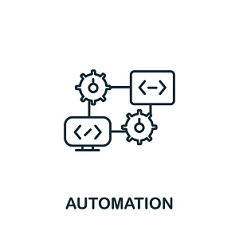
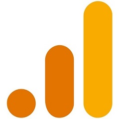

Projects and Interests
While I currently have no completed projects to showcase, I have a few ideas in mind that I would like to work on in the future.
Such ideas revolve around productivity, automation and data anaylsis.
Productivity
Over the past two years, I have developed a keen interest in productivity. I have learned a lot from influencers like Ali Abdaal, a vlogger and entrepreneur, about the importance of productivity.
Techniques such as the Trident Method, Second Brain, and using tools like Notion have significantly enhanced my daily activities.

Automation
I have a passion for AI and a deep understanding of its operations, including the use of NLP (Natural Language Processing), Machine Learning, and deep neural networks.
I plan to create an AI application that can enhance automation and productivity.

Data Science
With some knowledge of Power BI, a business intelligence platform for data visualization,
I am eager to use data science to analyze data and tell compelling stories through it.
Skills I'm Developing
To support my upcoming projects, I'm currently learning and planning to learn various technologies, frameworks, and libraries that will form the foundation of my future work. This includes:
- Mobile/Android Development: Using Kotlin and Jetpack Compose for efficient and faster development of Android applications. Additionally, exploring Flutter, a cross-platform framework that uses Dart to build applications.
- Python: A versatile programming language known for its readability and wide usage in machine learning, data science, and web development with frameworks like Django.
- Libraries and Frameworks: Such as Pandas for data analysis and Node.js for server-side JavaScript.
Ideas for future projects
- Creating a personal knowledge management system based on certain principles like the second brain.
- Designing a data visualization dashboard for visualizing personal and public data, helping to draw meaningful insights.
Resources that I recommend
Throughout my tech journey there are several resources that have been highly beneficial.
Some of this resources cover a wide range of topics from web development, data science, machine learning, and productivity.This includes:
- Freecodecamp is a non-profit educational organization that offers an interactive learning web platform, an online community forum, chat rooms, online publications, and local organizations.
FreeCodeCamp provides a comprehensive curriculum that covers a wide range of topics, including HTML, CSS, JavaScript, data visualization, APIs, and more.
The platform is designed to be self-paced, allowing learners to progress through the material at their own speed.
- ALX is a premier technology training provider in Africa, dedicated to equipping young people with the most in-demand technical and soft skills.
By offering world-class programs, ALX aims to prepare learners for thriving careers in the global digital economy.
The organization focuses on high-growth industries and fosters the development of agile digital leaders for the 21st century.
- Programming with mosh is a popular YouTube channel and online learning platform created by Mosh Hamedani, a software engineer and educator.
Mosh is known for his clear and concise teaching style, making complex programming concepts easy to understand for learners of all levels.
The channel offers a wide range of tutorials and courses covering various programming languages and technologies, including JavaScript, Python, C#, React, Angular, and more.